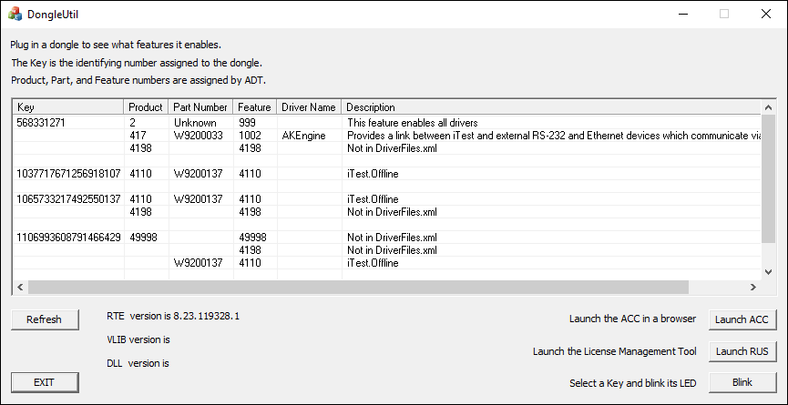
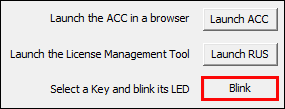
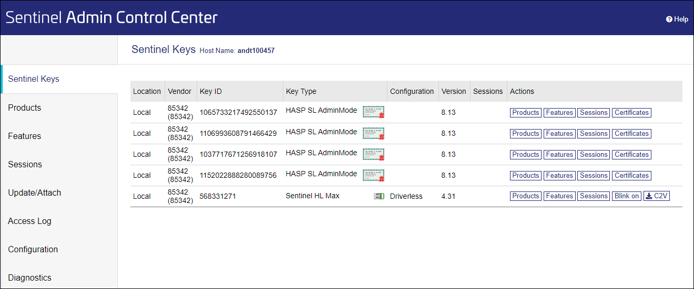

iTest User's Guide
A dongle is a small hardware device that plugs into the USB port of a laptop or computer. A&D dongles contain licensed driver information and data used to initialize and run iTest drivers and hardware. This document describes how to view the current list of drivers on a dongle by using the DongleUtil license utility that comes with the iTest software. To update an existing dongle, see the Updating a Dongle section.
To view the drivers that are licensed by your dongle, do the following:
The dialog will appear in a new window, listing all license keys:
DongleUtil

DongleUtil
| Column | Description |
| Key | Displays the unique license key that was assigned to the dongle when it was manufactured. There are two types of keys, HL and SL, or hardware and software license. HL keys are found on a dongle. SL keys are found on a license server. |
| Product | Unique identification number assigned by A&D. |
| Description | Lists license key details. |
DongleUtil.exe can also be run via command-line to generate a text file of the its contents. This file is saved to $SYSTEMDIR\DongleInfo.txt.
Syntax:
DongleUtil.exe OutputDongleInfo
 |
NOTE: | DongleInfo.txt is also generated by ProblemReport.exe |
Dongles have an LED light in them which can be used for physical identification. To identify which license key corresponds with your physical dongle, select the key you would like to identify press Blink. The dongle that contains the key will blink. Press Blink again and the blink will stop.
Blink

ACC stands for Admin Control Center. This is a browser based utility that displays additional information about Sentinel licenses. Click Launch ACC to open the utility in a browser window.
ACC

RUS stands for Remote User Support. This is a Sentinel utility that is used to update licenses. For more information, see the Updating a Dongle guide.
Remote User Support